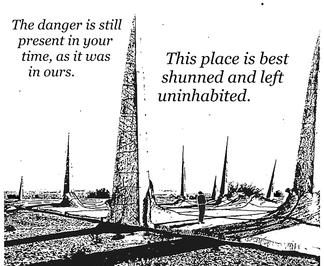

One of the harbingers of the coming digital age is the suspicion that we may lack the ability to make sense of our recorded ones and zeros in the future.
It was meant to be a showcase for Britain's electronic prowess, a digital Domesday Book. But 16 years after it was created, the £2.5 million BBC Domesday Project is now unreadable.
By contrast, the original Domesday Book, an inventory of eleventh-century England compiled in 1086 by Norman monks, is in fine condition in the Public Record Office and can be accessed by anyone who can read and has the right credentials.
What was it like playing Angry Birds on an iPhone 3G? We do not know; Apple is no longer distributing signed receipts for that binary. To future historians—not just of computing, but of humanity—the current period will be a dark age.
- Obsolescence of desirability: When designers change the styling of products so customers will purchase products more frequently due to the decrease in the perceived desirability of unfashionable items.
- Obsolescence of function: When an item is produced to break down or otherwise become non-functional in an abnormally short period of time.
- Obsolescence of compatibility: When a product becomes obsolete by altering the system in which it is used in such a way as to make its continued use difficult. Common examples of planned systemic obsolescence include not accommodating forward compatibility in software.
- Pseudo-obsolescence of desirability: When planned obsolescence appears to introduce innovative changes into a product, but in reality does not, often forcibly outfashioning an otherwise-useful product.
-
Paper Internet
incoming: mobile lasting uxn devlog salvage computing collapse computing